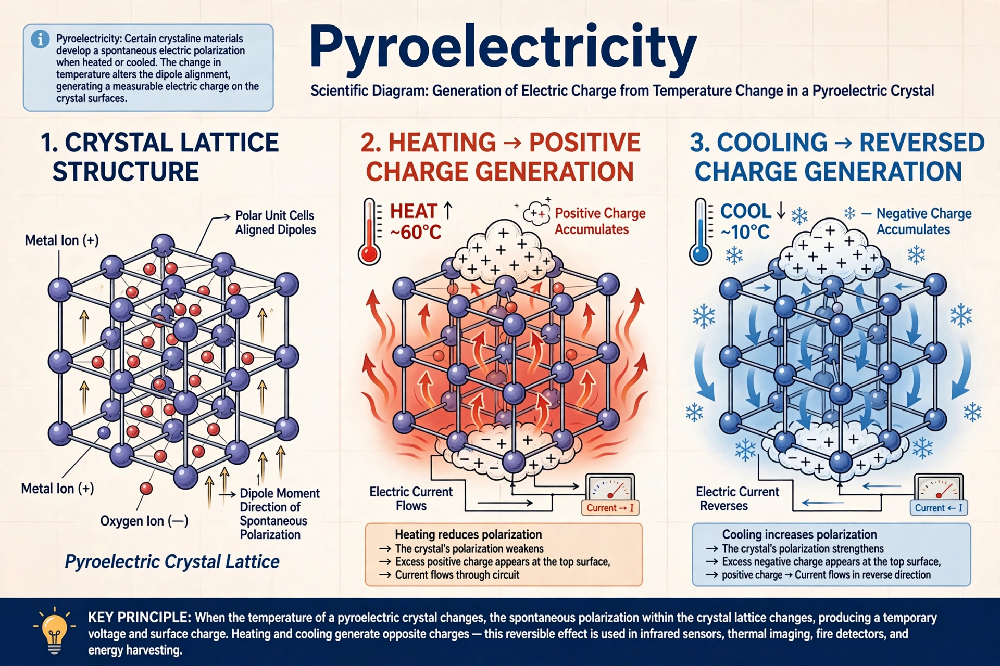

Pyroelectricity is the property of certain crystals to generate a temporary voltage when heated or cooled. The change in temperature modifies atomic positions slightly, changing the crystal's polarization and thus the voltage across it. If temperature stays constant, the voltage decays as current leaks.

The effect was known in antiquity with tourmaline attracting ash when heated, noted by Theophrastus. David Brewster coined the term in 1824. Lord Kelvin developed theory, and the Curies studied its relation to piezoelectricity.
All pyroelectric materials are also piezoelectric. Of the 32 crystal classes, 21 lack a centre of symmetry, 20 are piezoelectric, and 10 of those have a permanent spontaneous polarization — these are pyroelectric. Ferroelectrics are the subset whose polarization can be reversed by an electric field.
Passive infrared (PIR) sensors for motion detectors and burglar alarms, uncooled thermal cameras, flame detectors, and experimental heat-to-electricity energy harvesting all exploit pyroelectric coefficients.